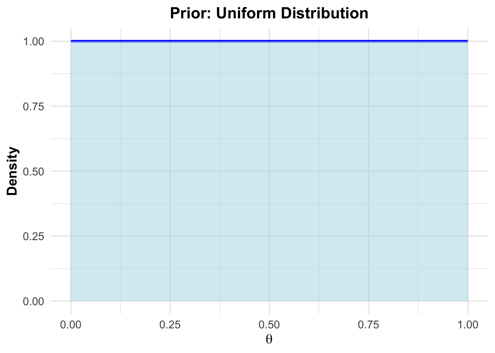

Chapter 5 Null Hypothesis Significance Testing (NHST)
Null Hypothesis Significance Testing (NHST) is a statistical method widely used in research, including health sciences, to evaluate whether observed data provide sufficient evidence to refute a specific hypothesis. It operates within a framework of probability and decision-making to address the following question:
Are the observed results likely to occur by chance alone if the null hypothesis is true? If one decides that the observed results are unlikely to occur by chance alone, the null hypothesis is rejected in favor of an alternative hypothesis.
NHST is not designed to “prove” hypotheses but rather to provide evidence against the null hypothesis. Underlying NHST is the idea of falsifiability. Sometimes one counter example is enough to reject a hypothesis like “all swans are white”. Seeing one black swan, proves the hypothesis wrong.
{kind=link}
Key concepts:
Null Hypothesis \(H_0\): This represents the assumption of some specific effect or no effect at all. For example, in a clinical trial comparing two treatments, might state that both treatments have the same effect. The alternative ist that one treatment is superior to the other.
Alternative Hypothesis \(H_1\): This is the opposing claim to \(H_0\), the logical complement. Example:
- \(H_0: \theta \le 0.4\)
- \(H_1: \theta > 0.4\)
- \(H_0\) states that the treatment effect is less than or equal to 0.4, while \(H_1\) states that the population proportion is greater than 0.4.
\(p\)-value: The p-value quantifies the probability of obtaining results as extreme as (or more extreme than) the observed data, assuming that \(H_0\) is true. A smaller \(p\)-value indicates stronger evidence against \(H_0\). There are many misconeptions about p-values.
Significance level \(\alpha\): Researchers set a threshold to determine whether to reject \(H_1\). If the \(p\)-value is smaller than \(\alpha\), \(H_0\) is rejected in favor of \(H_1\). Note, that there is absolutely now special reason to use \(\alpha = 0.05\) as a default value. To quote Ronald Fisher: “…, and it is convenient to take twice the standard error as the limit of significance; this is roughly equivalent to the corresponding limit P=0.05, …”
How NHST works:
Formulate Hypotheses: Define \(H_0\) (e.g., “The new therapy has no effect”) and \(H_1\) (e.g., “The new therapy improves outcomes”).
Collect data: Perform an experiment or study to gather relevant data.
Calculate the test statistic: Compute a value based on the sample data that reflects the difference or effect under investigation.
Compute the \(p\)-Value: Determine the probability of observing the test statistic (or more extreme values) if \(H_0\) is true.
Make a Decision: Compare the p-value to the significance level:
- If \(p < \alpha\): Reject \(H_0\); evidence suggests \(H_1\) is true.
- If \(p \ge \alpha\): Fail to reject \(H_0\); insufficient evidence to support \(H_1\).
(Some) Limitations of NHST:
Focus on \(p\)-values with hard cut-offs: Solely relying on p-values can lead to overinterpretation of results without considering practical significance.
Dichotomous thinking: The decision to “reject” or “fail to reject” \(H_0\) oversimplifies the complexity of real-world data. This binary thinking incentivizes researchers to focus on statistical significance rather than real relevance. It happened to me not only once that a colleague looked at me with a sad facial expression announcing that the \(p\)-value was “not significant”. This should be not an issue at all. The focus should be on doing useful analyses in the most rigorous way possible.
Sample size influence: Large samples can make small, clinically irrelevant differences statistically significant. Example: Given an arbitrarily small difference between means of two groups. There is always a sample size that makes the difference “significant”. See Exercise 2.
Publication bias: Many journals tended to publish studies with “significant” results. “Not significant” results were often not published. This can lead to a distorted view of the literature.
\(p\)-hacking: In the pursuit for “significant” results (which results in publications, which results in tenure), it is natural to do everything to get them. This can include data dredging, selective reporting, and other questionable practices.
See Kruschke for more limitations of NHST.
In practice, NHST should be accompanied by confidence intervals, effect size calculations, and a focus on clinical relevance to provide a more comprehensive understanding of the results.
This Review of NHST or this overview might be a good entry point.
This video could also help to understand the basic concepts.
5.1 Example in the literature
\(p\)-values are omnipresent in the scientific literature. There a rather few papers in our field that do not contain them. We do not use \(p\)-values in in descriptive tables (see here and here).
Here is an example from the literature. Table 2 lists studies and one column is the \(p\)-value. Note, that it is not good practice to present \(p\)-values (if one should use them at all) as dichotomy: \(p < 0.05\). This statement does not allow to judge the strength of the evidence against the null hypothesis. Both, \(p = 0.00000001\) and \(p = 0.049\) would satisfy the inequality.
5.2 Binomial test
In the first chapter, we invented the 1000-researcher experiment. There, we have already encountered hypothesis tests in disguise. If we would assume that the probability of a false positive is 0.04, we would “expect” 40 false positives. We asked, what is the probability of observing 137 or more. This is an example of a hypothesis test:
- \(H_0: \theta \le 0.04\)
- \(H_1: \theta > 0.04\)
Under \(H_0\), what is the probabilty to see the oberved number of false positives (in our case, this is the test statistic) or more?
The answer was \(p = 5.551115 \cdot 10^{-16}\).
A reasonable person would say, that this result did not happen by chance alone and therefore conclude, the true, but unknown false positive rate \(\theta\) is larger than 0.04.
Formally, this is called a (one-sided) binomial test.
Note, that \(H_1\) is the logical complement of \(H_0\).
##
## Exact binomial test
##
## data: 137 and 1000
## number of successes = 137, number of trials = 1000, p-value < 2.2e-16
## alternative hypothesis: true probability of success is greater than 0.04
## 95 percent confidence interval:
## 0.1194241 1.0000000
## sample estimates:
## probability of success
## 0.137The output in R tells us the following:
- data: 137 and 1000 successes oberved
- alternative hypothesis: true probability of success is greater than 0.04, which we assume afterwards.
- \(p\)-value$ < 2.2e-16$. This is value is smaller than the precision in R (`.Machine’).
- 95 percent confidence interval: \(0.1194241\) to \(1.0000000\). The upper limit of \(1\) occurs since we have a once-sided test.
- Sample estimates: Estimating the true (but unknown) proportion from the sample would just be: \(\frac{137}{1000} = 0.137\)
Two-sided test:
- \(H_0: \theta = 0.04\)
- \(H_1: \theta \ne 0.04\)
One could argue that this is bad style, since we should probably know the direction of the effect.
##
## Exact binomial test
##
## data: 137 and 1000
## number of successes = 137, number of trials = 1000, p-value < 2.2e-16
## alternative hypothesis: true probability of success is not equal to 0.04
## 95 percent confidence interval:
## 0.1162817 0.1598810
## sample estimates:
## probability of success
## 0.137- alternative = “two.sided”, this indicates that we are interested in both directions (higher or lower than \(0.04\)). With some experience, one would probably not test for lower when seeing the observed number of 137.
- 95 percent confidence interval: \(0.1162817\) to \(0.1598810\).
Interpretation of this interval: When drawing repeated samples, in 95% percent of the samples, the so constructed interval (which will be different everytime) contains the true but unknown parameter.
Note, that the “Exact binomial test” was used. There where no approximations made. I would recommend always using exact tests if available, since we are in the 21th century and computers are fast.
Again, the \(\alpha\) level of \(0.05\) has nothing special (apart from convention) to it. We can also use a \(\alpha = 0.14\) level. In this case, we construct confidence intervals with a 86% confidence level.
##
## Exact binomial test
##
## data: 137 and 1000
## number of successes = 137, number of trials = 1000, p-value < 2.2e-16
## alternative hypothesis: true probability of success is not equal to 0.04
## 86 percent confidence interval:
## 0.1211304 0.1542134
## sample estimates:
## probability of success
## 0.137- confidence interval: \(0.1211304\) to \(0.1542134\).
With smaller coverage probability (86 instead of 95), we get a narrower interval. Trivially, a 100% confidence interval would be \(0\) to \(1\) and a 0% confidence interval would be \(0.04\) to \(0.04\) or any other specific value assuming that the true parameter can take any value from \(0\) to \(1\).
See also Exercise 3.
Comparison with Bayesian version of estimating \(\theta\):
- We cannot include a prior distribution for the paramater \(\theta\).
- We cannot calculate the posterior distribution of \(\theta\). Hence, we cannot make statements like “the probability that \(\theta\) is larger than 0.04 is 0.9”.
- Prior knowledge could probably be included in the form of the null hypothesis stating, for instance, that \(\theta \le 0.2\). This could be based on previous studies or expert knowledge.
5.3 Proportions test
If we are interested in comparing two proportions, we can use the proportions test.
5.3.1 One sample case
set.seed(443)
heads <- rbinom(1, size = 100,
prob = 0.5) # create a sample with known probability
prop.test(heads, 100,
conf.level = 0.94, p = 0.5) # continuity correction TRUE by default##
## 1-sample proportions test with continuity correction
##
## data: heads out of 100, null probability 0.5
## X-squared = 0.25, df = 1, p-value = 0.6171
## alternative hypothesis: true p is not equal to 0.5
## 94 percent confidence interval:
## 0.3739955 0.5681618
## sample estimates:
## p
## 0.47##
## 1-sample proportions test without continuity correction
##
## data: heads out of 100, null probability 0.5
## X-squared = 0.36, df = 1, p-value = 0.5485
## alternative hypothesis: true p is not equal to 0.5
## 94 percent confidence interval:
## 0.3787665 0.5632834
## sample estimates:
## p
## 0.47correct = TRUE indicates the a correction (Yates) is used to make the test more accurate and consider the fact that the test statistic is in fact discrete.
94% confidence interval: \(0.3739955\) to \(0.5681618\).
\(\chi^2 = 0.25\). This is the value of the test statistic used in the test. Under the null hypothesis (in this case \(H_0 = 0.5\)), the test statistic follows a \(\chi^2\) distribution.
See also Exercise 4.
5.3.2 More than one sample
Example:
# Data from Fleiss (1981), p. 139.
# H0: The null hypothesis is that the four populations from which
# the patients were drawn have the same true proportion of smokers.
# H1: The alternative is that this proportion is different in at
# least one of the populations.
smokers <- c(83, 90, 129, 70)
patients <- c(86, 93, 136, 82)
prop.test(smokers, patients)##
## 4-sample test for equality of proportions without continuity correction
##
## data: smokers out of patients
## X-squared = 12.6, df = 3, p-value = 0.005585
## alternative hypothesis: two.sided
## sample estimates:
## prop 1 prop 2 prop 3 prop 4
## 0.9651163 0.9677419 0.9485294 0.8536585\(p\)-value \(= 0.005585\). One would argue that this test statistic is unlikely to have come about by chance alone and reject the null hypothesis, that all proportions are equal.
X-squared = 12.6, df = 3. The test statistic is distributed according to a \(\chi^2\) distribution with 3 degrees of freedom. See also exercise 5. Degrees of freedom is the number of values in the final calculation of a statistic that are free to vary.
5.4 (Classical) \(t\)-test
The \(t\)-test is one of the most famous classical statistical tests out there. Consider these links: 1 2 as starting point.
With the \(t\)-test, we want to answer the question
if the true, but unobserved mean of a population is different from a specific value (one sample \(t\)-test) or
if the true, but unobserved means of two populations are different from each other (two sample \(t\)-test).
Conveniently, R has a built-in function for these tests.
5.4.2 Two sample \(t\)-test
Let’s jump right in and use our example from the previous chapter where we performed the Bayesian \(t\)-test:
## [1] -50 0 120 120 120 190 240 300## [1] -120 -120 -50 0 0 50 110 190## [1] 8## [1] 8## vars n mean sd median trimmed mad min max range skew kurtosis
## y1 1 8 130.0 116.00 120 130.0 140.85 -50 300 350 -0.13 -1.39
## y2 2 8 7.5 107.94 0 7.5 118.61 -120 190 310 0.29 -1.38
## se
## y1 41.01
## y2 38.16# Boxplot:
data.frame(y = c(y1, y2), group = c(rep(1, 8), rep(2, 8))) %>%
ggplot(aes(x = factor(group), y = y)) + # Use factor for discrete x-axis
geom_boxplot() + # Add boxplot layer
geom_jitter(width = 0.1) # Add jitter for individual
# -> Visually, there seems to be a difference between the two groups.
t.test(y1, y2, conf.level = 0.93)##
## Welch Two Sample t-test
##
## data: y1 and y2
## t = 2.1867, df = 13.928, p-value = 0.04634
## alternative hypothesis: true difference in means is not equal to 0
## 93 percent confidence interval:
## 12.55847 232.44153
## sample estimates:
## mean of x mean of y
## 130.0 7.5The test statistic is a \(t\)-distribution with \(13.928\) degrees of freedom.
The value of the test statistic is \(2.1867\).
\(H_0: \mu_1 = \mu_2\). The group means are equal.
\(H_1: \mu_1 \ne \mu_2\). The group means are different.
\(p\)-value \(= 0.04634\). In the classical framework, this would be considered “significant” at the \(\alpha = 0.05\) level and one would reject the null hypothesis and accept the alternative hypothesis. In the Baysian framework, we abstained from making a decision.
93% confidence interval for the difference in means is rather wide: \(12.55847\) to \(232.44153\).
Let’s try to visualize this.
Under the assumption that there is no difference in means, the test statistic
\[ t = \frac{\bar{X}_1 - \bar{X}_1}{\sqrt{\frac{s_1^2}{n_1} + \frac{s_2^2}{n_2}}} \]
would be distributed according to a \(t\)-distribution with 13.928 degrees of freedom.
# Load ggplot2
library(ggplot2)
# Define degrees of freedom
df <- 13.928
# Define the range for x and the critical t-values
x <- seq(-4, 4, length.out = 500)
critical_t <- 2.1867
# Create a data frame with x and corresponding density values
t_dist <- data.frame(
x = x,
density = dt(x, df)
)
# Plot the t-distribution with shaded tail areas
ggplot(t_dist, aes(x = x, y = density)) +
# Add the main t-distribution curve
geom_line(linewidth = 1, color = "blue") +
# Add shaded areas below the curve outside the critical t-values
geom_ribbon(
data = subset(t_dist, x < -critical_t),
aes(ymin = 0, ymax = density),
fill = "red",
alpha = 0.3
) +
geom_ribbon(
data = subset(t_dist, x > critical_t),
aes(ymin = 0, ymax = density),
fill = "red",
alpha = 0.3
) +
# Add vertical lines for the critical t-values
geom_vline(xintercept = c(-critical_t, critical_t),
linetype = "dashed", color = "black") +
# Annotate the critical t-values
annotate("text", x = -critical_t, y = 0.05,
label = paste0("-t = ", critical_t), angle = 90, vjust = -0.5) +
annotate("text", x = critical_t, y = 0.05,
label = paste0("t = ", critical_t), angle = 90, vjust = -0.5) +
# Add labels and style
labs(
title = "t-Distribution with Shaded Critical Areas (Two-Sided Test)",
subtitle = paste("Degrees of Freedom:", df),
x = "t",
y = "Density"
) +
theme_minimal() +
theme(
plot.title = element_text(hjust = 0.5), # Center the title
plot.subtitle = element_text(hjust = 0.5) # Center the subtitle
)
## [1] 0.04633225The plot shows the \(t\)-distribution. Marked in red are the areas where the test statistic takes the value we observed or “more extreme” values. With “more extreme” we mean values that are further away from 0 in both directions since we conducted a two-sided test. The area under the curve is the \(p\)-value. As you can see, the \(p\)-value is the sum of the two red areas and matches the output of the \(t\)-test function in R.
5.5 Correlation test
In the chapter about descriptive statistics, we calculated the (Pearson) correlation coefficient to measure the strength of the linear relationship between two variables.
Often, the null hypothesis for the correlation coefficient is that there is no correlation between the two variables (\(\rho=0\)). One could argue that this is a rather baseless assumption. In reality, the true correlation coefficient is probably not exactly 0 and one could argue more precicely a range of plausible values for \(\rho\) for the specific case at hand. Often, one can see an ocean of \(p\)-values in the literature, where the correlation coefficient is tested against 0. This is often superfluous. For example, if the sample size is \(n=234\) and the sample correlation coefficient is \(r = 0.76\), it is very unlikely that the true correlation coefficient is 0. One does not need a hypothesis test to know this (see exercise 6).
We can do a correlation test in R with the cor.test function.
This article is also helpful.
Maybe, let’s take the part about the Shapiro-Wilk test not too seriously.
The test statistic(s) for the test(s) can be found here. If we really want to take the result of such a test seriously, we need to check the assumptions of the test.
5.7 Simulations based approaches
Through the power of modern computers, we can simulate all kinds of hypothesis tests. We just assume that the null hypothesis is true and draw samples from the very distribution. In the old times, computational ressources were scarce and one had to rely on tables that were precalculated.
This shows you how the correlation coefficient behaves under the null hypothesis (that there is no correlation; \(\rho = 0\)). This is a very useful tool to understand the behavior of a test statistic under the null hypothesis. Of course, the probability that a correlation coefficient is exactly 0 is 0 since it’s a continuous variable, but in practice we are interested in “indistinguishable from 0” which is a small value. In the Bayesian framework from Kruschke, we defined a region of practical equivalence (ROPE) for this purpose.
We ask ourselves: What does my test statistic do if the null hypothesis is true? Then try to simulate it. This helps to understand what constitutes a qualitatively different result (from the null hypothesis) considering variability in the data.
5.8 Exercises
5.8.1 Exercise 1 - frequentist confidence interval
- Create 1000 random samples from a binomial distribution with \(n = 100\) and \(p = 0.38\).
- Calculate the 96% confidence interval for each sample using R.
- How often was the true parameter (\(p = 0.38\)) contained in the constructed interval?
5.8.2 Exercise 2 - everything becomes “significant”
Setting: two sample t-test. Assume there is a small difference between the means of two groups. - Show via simulation that with increasing sample size, the \(p\)-value becomes smaller and smaller and will be “significant” at some point irresespective of how small the true mean difference is and how small the \(\alpha-\) level is.
5.8.3 Exercise 3 - binomial test
- Create a sample from a binomial distribution with \(n = 54\) and \(p = 0.68\).
- Perform a two-sided binomial test with \(H_0: p = 0.5\).
- Calculate the 90% confidence interval for the sample proportion.
- Calculate the p-value for the two-sided test by “hand” (using dbinom/pbinom in R).
5.8.4 Exercise 4 - proportions test
- Create a sample from a binomial distribution with \(n = 100\) and \(p = 0.5\).
- Perform a proportions test with \(H_0: p = 0.5\) and interpret the results.
- Perform the proportions test with the whole range of possible proportions \(H_0: p = 0.01 \cdots p = 0.99\) in steps of \(0.01\). And plot the p-values on the y-axis and the assumed proportion on the x-axis. This is called a p-value function.
5.8.5 Exercise 5 - proportions test 2
- Use the data from the smokers proportions test example above.
- Draw a \(\chi^2\) distribution with 3 degrees of freedom and calculate the probability of observing a value of 12.6 or larger.
5.8.6 Exercise 6 - correlation coefficent
- Create a sample of \(234\) pairs of uncorrelated observations \((x_i,y_i)\). \(X_i\) and \(Y_i\) are drawn from a normal distribution with mean 0 and standard deviation 1.
- Calculate the sample correlation coefficient \(r\).
- Repeat this 1000 times.
- How often was the sample correlation coefficient larger than 0.76?